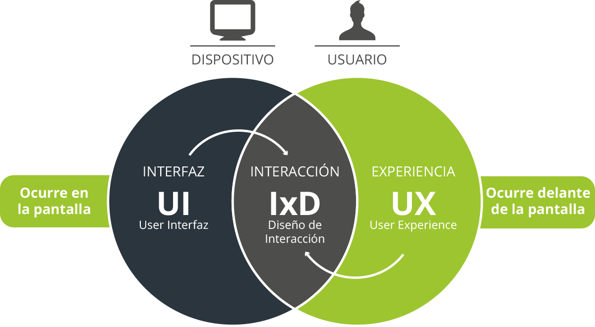
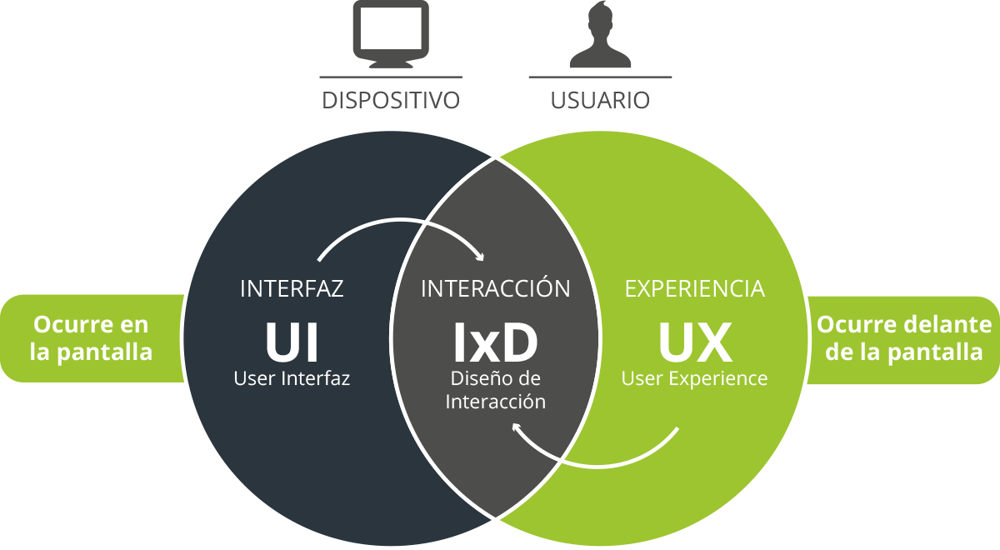

Esto es un parrafo. Esto es un pedazo de texto en negrita. Texto en italicas. Esto es texto subrayado.
Texto remarcado.
Definte texto en letras pequeñas. Esto es un subindice. Esto es un superindice.
Esto es una cita textual.
Esto es la referencia de una cita textual. Esto es un bloque de texto en linea, no tiene carga semantica, span.
Aca vemos la etiqueta br para un salto de linea.
Aca vemos la etiqueta hr que define un salto semantico de contenido dibuja una linea horizontal.
 
